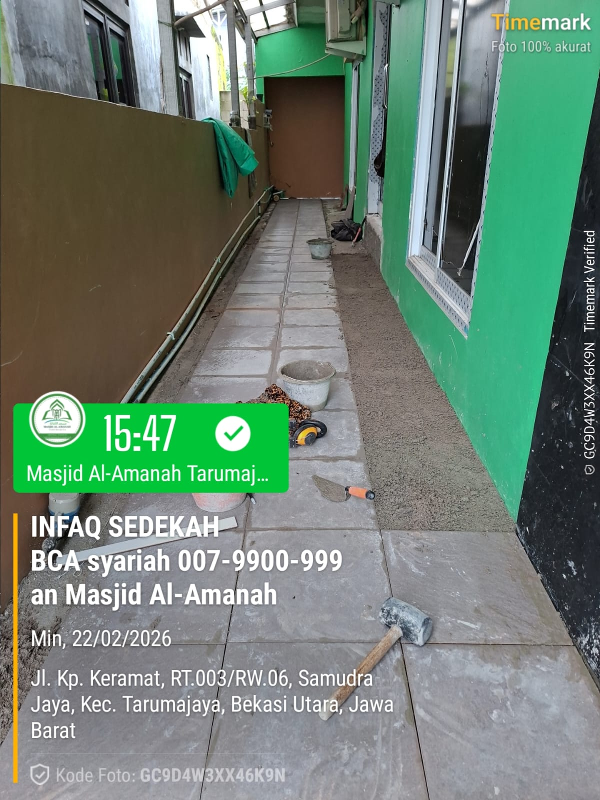
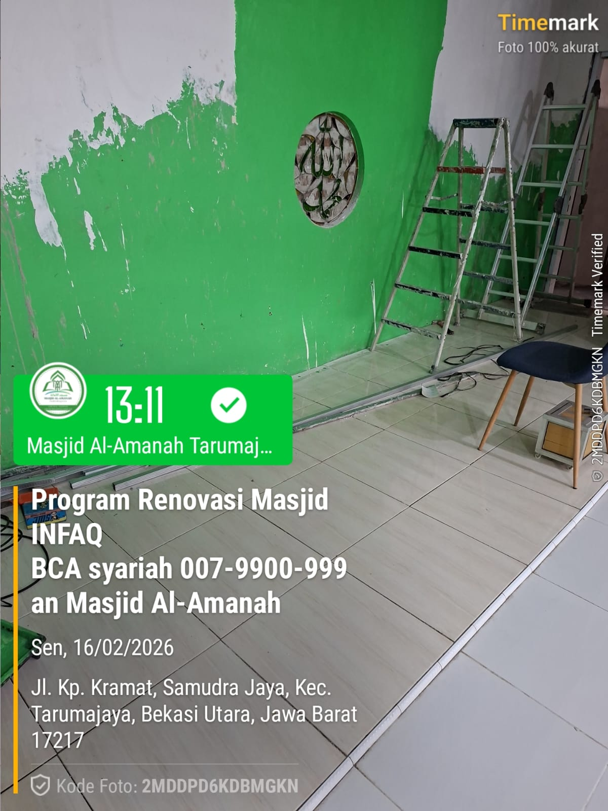
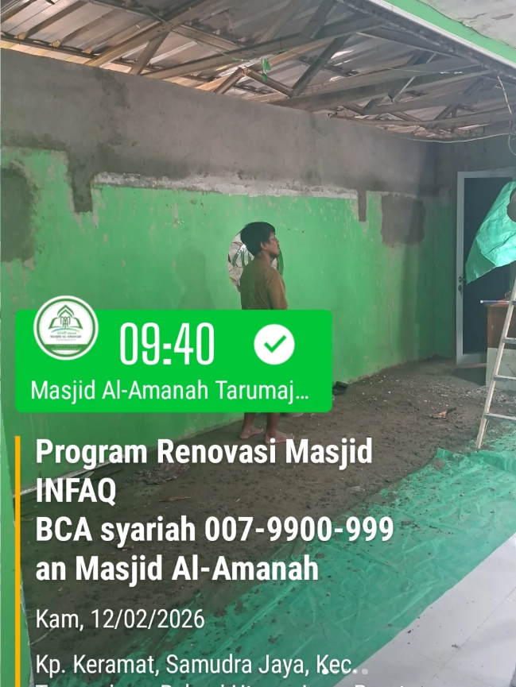
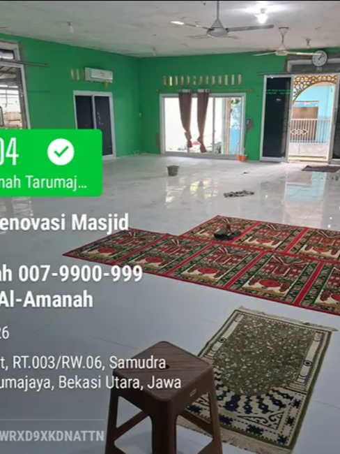
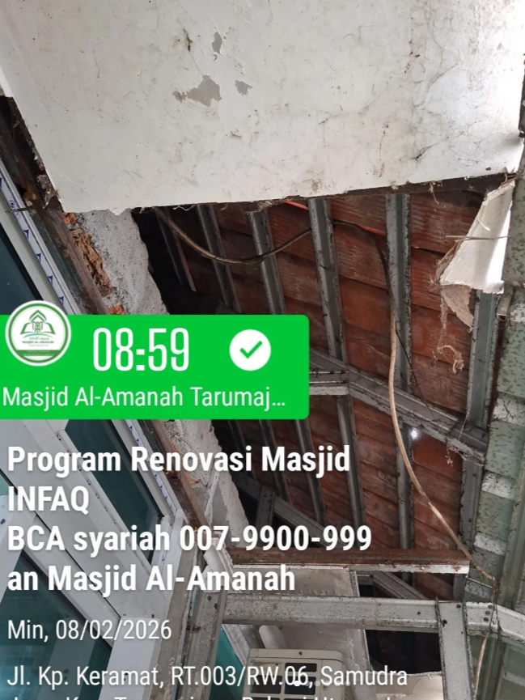
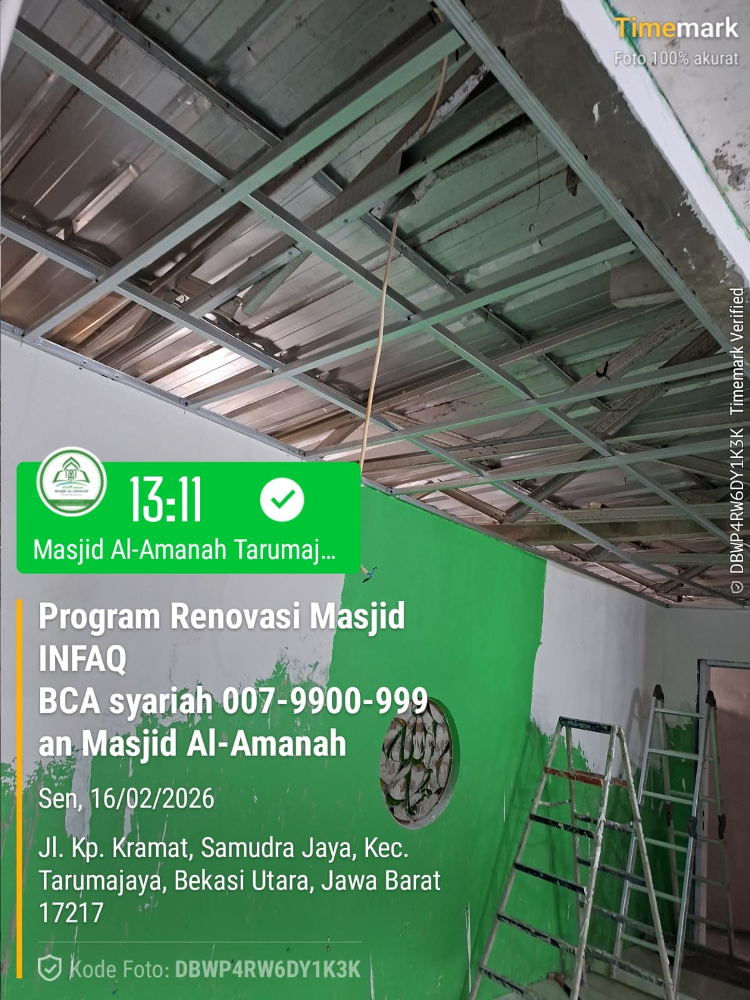
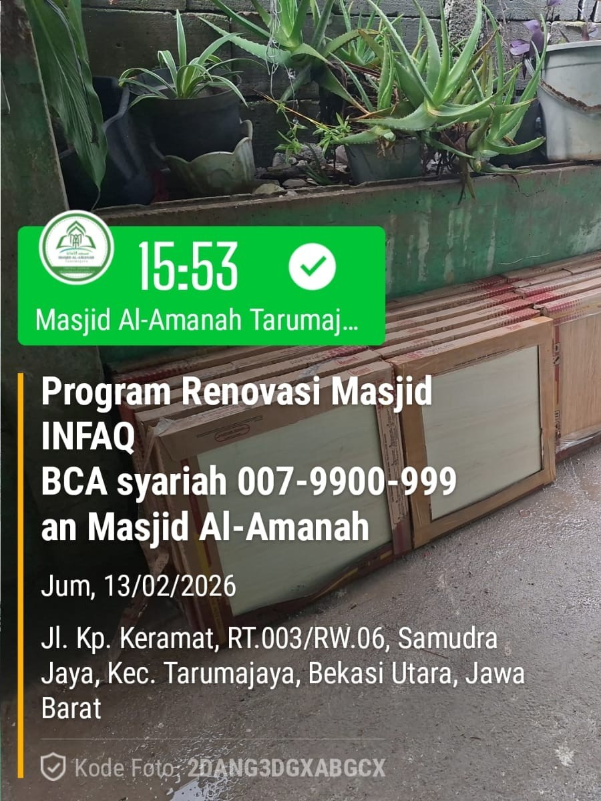

MASJID AL-AMANAH
TARUMA JAYA
TARUMA JAYA
V2QH+MGX, Kp keramat, RT.003 RW006,
Samudra Jaya, Kec. Tarumajaya, Bekasi Utara, Jawa Barat


Alhamdulillah pemasangan keramik teras pintu masuk utama Masjid Al-Amanah – Februari 2026

Pemasangan keramik arah tempat wudhu – Februari 2026

Pengacian bagian tembok bagian imam – Februari 2026

Pemasangan keramik bagian imam – Februari 2026

Pemasangan lantai keramik bagian makmum – Februari 2026

Perbaikan plafon teras dekat wudhu - Februari 2026

Pemasangan atap – Februari 2026

Pembelian keramik & proses pemasangan keramik – Maret 2026
Bagi Antum yang memiliki kelapangan rezeki dan keinginan untuk turut serta dalam mendukung kemakmuran Masjid Al-Amanah, kami membuka pintu kebaikan melalui donasi operasional.
*Partisipasi ini bersifat sukarela (tidak wajib) dan disesuaikan dengan keikhlasan serta kemampuan masing-masing jamaah.
V2QH+MGX, Kp keramat, RT.003 RW006,
Samudra Jaya, Kec. Tarumajaya, Bekasi Utara, Jawa Barat